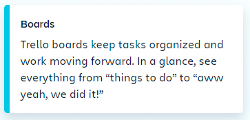

Lists
The diffrent stages of a task.Start as
Simple as To Do, Doing or Done-or build
a workflow custom fit to your team's
needs.There's no wrong way to Trello
Cards
done.As you make progress, move cards
Cards represent tasks and ideas and
hold all the information to get the job
across list to show thier status